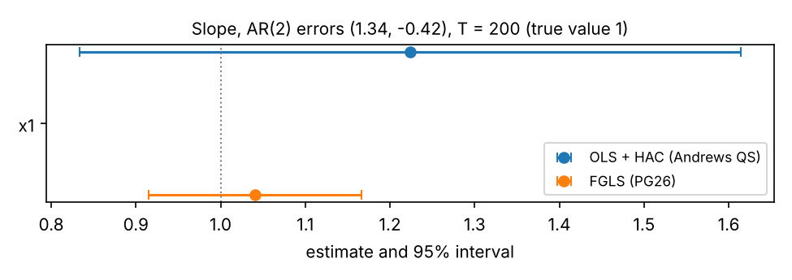

pyfgls — Feasible GLS for Python
Feasible GLS for time series regression and for heteroskedasticity of unknown form.
pyfgls implements the feasible generalized least squares (FGLS) estimators of
- [PG26] Perron, P. and González-Coya, E. (2026). Feasible GLS for time series regression. Journal of Econometrics 258, 106346 — serially correlated errors;
- [GP24] González-Coya, E. and Perron, P. (2024). Estimation in the presence of heteroskedasticity of unknown form: a Lasso-based approach. Journal of Econometric Methods 13(1), 29–48 — heteroskedasticity of unknown form;
and their combination for time series with both problems ([PG26] Supplement S-4).
The message of both papers is the same: GLS is not a fragile luxury. Done the way they
propose, it is consistent in situations where OLS is not, it is (essentially) never less
precise than OLS, it is often far more precise, and its confidence intervals have
accurate coverage and are shorter. pyfgls packages those procedures with
statsmodels-style results, pandas support and the papers' simulation designs.
version 0.1.0 · python ≥ 3.10 · MIT license
contents
Install
pyfgls is on PyPI:
pip install pyfgls # core
pip install "pyfgls[formula,plot]" # + formula interface and diagnostic plots
pip install --upgrade pyfgls # update to the latest releaseRequires Python 3.10 or newer; tested on 3.10–3.13 on Linux, macOS and Windows. Core
dependencies: NumPy, SciPy, pandas, scikit-learn, joblib. Optional: formulaic
(formula extra), matplotlib (plot extra), statsmodels (only used in the test
suite).
A virtual environment keeps these dependencies apart from other projects:
python3 -m venv .venv
source .venv/bin/activate # Windows: .venv\Scripts\activate
python -m pip install --upgrade pip
python -m pip install pyfglsCheck the installation; this prints the installed version:
python -c "import pyfgls; print(pyfgls.__version__)"
pipsays "No matching distribution found for pyfgls"? Yourpipruns on Python 3.9 or older (on macOS, the built-inpython3is 3.9), and older versions ofpipdo not say that the Python version is the reason. Check withpython3 --version, install Python 3.10+ (from python.org, orbrew install python@3.12) and use a virtual environment:shellpython3.12 -m venv .venv && source .venv/bin/activate python -m pip install pyfgls
Development version from GitHub:
pip install "git+https://github.com/emiliogcs/pyfgls.git" # latest main
git clone https://github.com/emiliogcs/pyfgls.git && cd pyfgls
pip install -e ".[dev]" # editable, with test toolsSee CONTRIBUTING.md for the development workflow.
Quickstart
1. Serial correlation with a non-exogenous regressor
The [PG26] Table 1 design: AR(1) errors with ρ = 0.8 and a regressor w_t = v_t + e_{t−1}
that responds to last period's shock.
import pyfgls as pf
from pyfgls.simulate import serial_dgp
sim = serial_dgp(500, random_state=0)
res = pf.SerialFGLS(sim.y, sim.X).fit()
print(res.summary())
print(res.compare_ols())==============================================================================
FGLS Regression Results
==============================================================================
Dep. variable: y Inference: normal
Method: FGLS (serial) AR order k*: 1 [BIC (kmax=15)]
Observations: 500 AR coefs rho: 0.7668
Effective obs.: 499 Non-exog. share: 0.015
Covariance: robust
------------------------------------------------------------------------------
coef std err z P>|z| 0.025 0.975
------------------------------------------------------------------------------
const 0.8768 0.1951 4.495 0.000 0.4945 1.2591
x1 0.9927 0.0258 38.449 0.000 0.9421 1.0433
==============================================================================
Notes:
[1] Covariance: [PG26] eq. (29), robust to non-exogenous (pre-determined) regressors.
[2] Collinear lagged columns dropped from the Durbin regression: L1.const
OLS FGLS (serial)
const coef 0.913171 0.876773
std err 0.131491 0.195064
CI width 0.515434 0.764637
x1 coef 1.412530 0.992690
std err 0.067605 0.025818
CI width 0.265006 0.101206The true slope is 1: OLS is off by 0.41 (it is inconsistent here), FGLS is on target with an interval less than half as wide.
2. Heteroskedasticity of unknown form
import pyfgls as pf
from pyfgls.simulate import hetero_dgp
sim = hetero_dgp(400, skedastic="x2", random_state=1) # Var(u | x) = x²
res = pf.LassoFGLS(sim.y, sim.X, random_state=0).fit()
print(res.summary())==============================================================================
FGLS Regression Results
==============================================================================
Dep. variable: y Inference: normal
Method: FGLS (hetero) Skedastic fit: lasso
Observations: 400 Selected z: x1^2, log(x1)
Effective obs.: 400 df_hat: 3
Covariance: robust Var. ratio max/min: 20.1
------------------------------------------------------------------------------
coef std err z P>|z| 0.025 0.975
------------------------------------------------------------------------------
const 1.3531 0.2825 4.790 0.000 0.7995 1.9068
x1 0.7736 0.1455 5.317 0.000 0.4884 1.0588
==============================================================================
Notes:
[1] Covariance: [GP24] eqs. (6)+(8), sandwich with bias correction.3. Both problems
import pyfgls as pf
from pyfgls.simulate import combined_dgp
sim = combined_dgp(300, ar=(0.5,), skedastic="x2", random_state=2)
res = pf.FGLS(sim.y, sim.X, random_state=0).fit()
print(res.compare_stages()) # F-C: serial correction only; F-CH: both F-C (serial) F-CH (serial+hetero)
const coef 0.849550 0.716812
std err 0.364408 0.299758
CI width 1.428453 1.175031
x1 coef 1.001988 1.044079
std err 0.168275 0.133527
CI width 0.659625 0.523416
Persistent AR(2) errors, T = 200: the OLS-HAC interval is centred far from the truth and is about three times as wide as the FGLS interval.
4. Robust versus naive intervals
When a regressor responds to past shocks, the textbook GLS variance ([PG26] eq. 27) ignores that the AR filter was estimated and its intervals are too short. The default variance (eq. 29) accounts for it.
import pyfgls as pf
from pyfgls.simulate import serial_dgp
# AR(1) errors (rho = 0.5) and a regressor x_t = 0.5 x_{t-1} + v_t + e_{t-1}
# that responds to last period's shock: pre-determined, not exogenous
sim = serial_dgp(200, ar=(0.5,), rho_x=0.5, gamma=1.0, burn=100, random_state=3)
model = pf.SerialFGLS(sim.y, sim.X)
robust = model.fit() # default: [PG26] eq. (29)
naive = model.fit(cov_type="naive") # eq. (27): valid for exogenous regressors only
print(f"nonexogeneity_share = {robust.nonexogeneity_share:.3f}")
print(pf.compare([naive, robust], names=["naive", "robust"]))nonexogeneity_share = 0.342
naive robust
const coef 1.219315 1.219315
std err 0.144750 0.146042
CI width 0.567409 0.572474
x1 coef 0.987909 0.987909
std err 0.052561 0.067858
CI width 0.206037 0.266000The estimates are identical; only the variance differs. For the slope the robust standard error is about 30% larger: the naive interval would under-cover. With exogenous regressors the share is close to 0 and the two coincide.
5. Formula interface
With the formula extra, models can be written as formulas on a pandas DataFrame; lag()
creates lags, and the names and the (time) index are carried into the results.
import pandas as pd
import pyfgls as pf
from pyfgls.simulate import serial_dgp
sim = serial_dgp(240, burn=100, random_state=4)
df = pd.DataFrame(
{"y": sim.y, "x": sim.X[:, 1]},
index=pd.period_range("2005-01", periods=240, freq="M"),
)
res = pf.SerialFGLS.from_formula("y ~ x + lag(x)", data=df, missing="drop").fit()
print(res.summary())==============================================================================
FGLS Regression Results
==============================================================================
Dep. variable: y Inference: normal
Method: FGLS (serial) AR order k*: 1 [BIC (kmax=12)]
Observations: 239 AR coefs rho: 0.8244
Effective obs.: 238 Non-exog. share: 0.064
Covariance: robust
------------------------------------------------------------------------------
coef std err z P>|z| 0.025 0.975
------------------------------------------------------------------------------
const 1.6427 0.3616 4.543 0.000 0.9340 2.3514
x 0.9894 0.0413 23.971 0.000 0.9085 1.0703
lag(x) -0.0072 0.0411 -0.175 0.861 -0.0878 0.0734
==============================================================================
Notes:
[1] Covariance: [PG26] eq. (29), robust to non-exogenous (pre-determined) regressors.
[2] Collinear lagged columns dropped from the Durbin regression: L1.const, L1.xmissing="drop" drops the first month, which lag(x) leaves empty. Note [2]: the Durbin
regression already contains the lags of every regressor, so the lag of the constant and
L1.x, which duplicates lag(x), are dropped there.
When to use which estimator
| Your data | Problem | Use | Paper |
|---|---|---|---|
| Time series, stationary | Serially correlated errors | SerialFGLS(y, X) |
[PG26] |
| Time series, stationary | Serial correlation and heteroskedastic innovations | FGLS(y, X) (F-CH) |
[PG26] Suppl. S-4 |
| Cross section (random sample) | Heteroskedasticity of unknown form | LassoFGLS(y, X) |
[GP24] |
Time series with lags of y as regressors |
Serial correlation | SerialFGLS(y, X, lagged_dep_vars=[...]) |
[PG26] §4.2 |
| Errors known to be MA(1), e.g. 2-step-ahead forecast errors | MA(1) with large negative θ | SerialFGLS(y, X, ma1=True) (GMA) |
[PG26] §5 |
| Many stochastic regressors in a time series | Lag selection | add ic_penalty="params" |
see Implementation choices below |
| You only want robust standard errors for OLS | — | pf.benchmarks.ols(y, X, cov_type="HAC") / "HC3" |
— |
FGLS is the general class: serial=None turns off the serial-correlation correction
and hetero=None the heteroskedasticity correction, so FGLS(y, X, hetero=None) is the
same estimator as SerialFGLS(y, X) and FGLS(y, X, serial=None) the same as
LassoFGLS(y, X).
Compared with the usual alternatives:
| Instead of | Use | Why |
|---|---|---|
| OLS + HAC standard errors | SerialFGLS |
OLS is inconsistent when the regressors respond to past shocks (pre-determined, not exogenous); FGLS stays consistent, is more precise, and its intervals cover better with persistent errors. |
| Cochrane–Orcutt | SerialFGLS |
Cochrane–Orcutt estimates the AR filter from OLS residuals and inherits their inconsistency; FGLS estimates it from the Durbin regression. |
The textbook GLS variance (cov_type="naive") |
the default cov_type="robust" |
The naive variance is valid only for exogenous regressors; the robust one ([PG26] eq. 29) is valid for pre-determined ones too and costs nothing when they are exogenous. |
| OLS + HC standard errors | LassoFGLS |
Never noticeably worse than OLS in the [GP24] designs, much more precise under heteroskedasticity. |
Parametric WLS ("wls_s1", "wls_s2") or SVR ("svr") |
the adaptive Lasso (default) | WLS can be worse than OLS when the variance driver is not among its covariates; SVR is competitive in MSE but its intervals cover less accurately. |
Time-series regressions with serially correlated errors ([PG26], Section 6)
The concluding remarks of [PG26] translate into the following recommendations.
- Use FGLS as the default. In a linear time-series regression with stationary
errors, estimate by FGLS with the AR order chosen by BIC and build confidence
intervals with the exogeneity-robust variance of eq. (29) —
SerialFGLS(y, X).fit()does exactly this. If the regressors happen to be exogenous, the robust correction vanishes asymptotically, so nothing is lost; if they are not, it is what makes the intervals reliable. OLS, by contrast, is generally inconsistent when the regressors react to past shocks, and Cochrane–Orcutt inherits that inconsistency. - Check that the regressors are pre-determined. FGLS needs the regressors to be
uncorrelated with current and future innovations (not with past ones). Use the
variable-addition LM test of Remark 9,
pf.diagnostics.test_predetermined(y, X). If it rejects, add lags of the relevant regressors to the model and refit; if the problem comes from omitted variables that are not observed, an instrumental-variables procedure is needed instead (outside the scope of this package). - Large negative moving-average components need care. When the errors may contain an
MA term with a large negative coefficient (typical of multi-step forecast errors), a
finite autoregression approximates them poorly and BIC may stop too early, which shows
up as intervals that under-cover. If you know the MA structure, use a tailored
transformation such as the GMA estimator (
SerialFGLS(..., ma1=True)). - Lagged dependent variables. With lags of
yamong the regressors, OLS is inconsistent under serial correlation; declare them (lagged_dep_vars=["ylag"]) so the AR filter is recovered from the lagged regressors (Section 4.2). - Multi-step predictive regressions. Under rational expectations the h-step forecast errors are MA(h−1) and both OLS and FGLS are consistent; FGLS is more efficient as long as the implied MA process is invertible. If it may be non-invertible, FGLS is only consistent with exogenous regressors — be cautious.
- Know your maintained assumptions. The advantages of GLS over OLS with HAC standard
errors rest on stationarity, invertibility of the error process and pre-determined
regressors. When these are plausible — as they usually are — the gains in precision
and in the reliability of inference are substantial. Use
check_stationarity=Trueto screen for unit roots, and watch forNonStationaryWarning(an estimated AR filter with a root near the unit circle). - Heteroskedastic innovations ([PG26] Remark 12). Either keep FGLS for the serial
correlation and make the variance heteroskedasticity-robust (
cov_type="HC3"), or — recommended — add the Lasso-based weighting of [GP24]:FGLS(y, X)(F-CH). With homoskedastic innovations F-CH is equivalent to correcting for serial correlation only, so there is no cost.
How much does nonexogeneity_share matter? It reports how large the eq. (29) correction
is relative to the textbook GLS variance: near 0 the regressors behave as exogenous; large
values mean the naive interval would under-cover.
Cross sections with heteroskedasticity of unknown form ([GP24], Section 6)
- Lasso-FGLS is a safe replacement for OLS + robust standard errors. In all the designs of [GP24] it was never noticeably worse than OLS (at most a few percent of MSE when there is no heteroskedasticity, because the Lasso then selects nothing and the weights are constant), and it is markedly better when heteroskedasticity is present.
- You do not need to know the variance function. It is enough that the candidate
covariates
zinclude at least one variable correlated with what drives the variance, plus some non-linear transforms. The Lasso picks what fits the variance pattern in the sample; it need not pick the "true" form, and it does not need to. - Prefer many variables and few transforms. Adding many candidate variables works
well; adding many functional forms of the same variable creates near-collinearity and
helps little. Trigonometric terms (
cos w,cos 2w, i.e. Chebyshev-type terms) are a good flexible choice:LassoFGLS(y, X, transforms=("linear", "trig"))or build your ownzwithpyfgls.hetero.make_dictionary. The default dictionary{x, x², log x, (log x)², cos x, cos 2x}per regressor follows the paper's simulations. - Always use the bias-corrected robust variance (the default, eq. (8)). The fitted variance function is an approximation, so model-based standard errors are not reliable; the corrected sandwich gives close-to-nominal coverage with intervals that are much shorter than OLS-HC intervals under heteroskedasticity.
- Avoid unrestricted parametric WLS when the variance driver is uncertain. The
Romano–Wolf WLS estimators (
skedastic="wls_s1","wls_s2") can be much worse than OLS when the true driver is not among their covariates; SVR ("svr") is competitive in MSE but tends to give less accurate coverage. The adaptive Lasso dominates both.
User guide
Data requirements
y,Xmay be NumPy arrays, lists, pandasSeries/DataFrame; names and the index are carried into the results. Include a column of ones for an intercept (a warning is issued if there is none; implicit intercepts such as a full set of dummies are recognised).- Time order matters for serial-correlation corrections. A pandas index must be sorted
and unique; a
DatetimeIndex/PeriodIndexwith gaps raisesTimeIndexErrorunlessallow_gaps=True(lags are then positional, e.g. trading days). Panels (MultiIndex) are not supported. - Missing values raise
MissingDataErrorby default;missing="drop"drops leading/trailing rows for time series (interior gaps would corrupt the lags) and any incomplete row for cross sections. Infinite values always raise. - Rank-deficient
XraisesCollinearityErrornaming the offending columns. Lagged constants, trends and seasonal dummies in the Durbin regression are dropped automatically. - Formulas (needs
formulaic):pf.FGLS.from_formula("y ~ x1 + np.log(x2) + lag(x1)", data=df, missing="drop"); the intercept is namedconst.
SerialFGLS — serial correlation ([PG26])
pf.SerialFGLS(
y,
X,
ar_order=None,
ic="bic",
kmax=None,
min_lags=None,
ic_penalty="order",
lagged_dep_vars=None,
wallis_regressor="auto",
exog="predetermined",
ma1=False,
missing="raise",
allow_gaps=False,
check_stationarity=False,
).fit(cov_type="robust", use_t=False)| Option | Meaning |
|---|---|
ar_order |
Fix the AR order instead of selecting it. |
ic |
"bic" (default, as in [PG26]) or "aic". |
kmax |
Largest order considered: default int(12·(T/200)^¼) (12 at T = 200); "theory" = ⌊(T/ln T)^⅓⌋; or an int. Capped so the Durbin regression uses ≤ 50% of the sample as regressors. |
min_lags |
Lower bound on the order; "adjusted" = ⌈(ln T)^1.5⌉ (Suppl. Lemma A.2). |
ic_penalty |
"order" (paper: penalise the AR order) or "params" (penalise every coefficient a lag adds — use it with several stochastic regressors). |
lagged_dep_vars |
Names/positions of regressors that are lags of y (Wallis recovery, §4.2). |
wallis_regressor |
"auto" (largest |t|), "median", or a regressor name. |
exog |
Your assumption; only affects notes and the default first-stage correction of FGLS. |
ma1 |
GMA estimator for MA(1) errors (§5). |
cov_type |
"robust" (eq. 29, default), "naive" (eq. 27, exogenous regressors only), "HC0"–"HC3" (eq. 29 with heteroskedasticity weights), "bootstrap" (sieve). |
LassoFGLS — heteroskedasticity ([GP24])
pf.LassoFGLS(
y,
X,
z="auto",
skedastic="lasso",
variance=None,
delta=0.1,
delta_scale=False,
cv_folds=10,
psi_grid=(0, 0.25, 0.5, 0.75, 1, 2),
lambda_rule="min",
fold_scheme="random",
cv_weights="fold",
weight_clip=None,
transforms=("linear", "poly2", "log", "trig"),
random_state=None,
n_jobs=None,
missing="raise",
).fit(cov_type="robust")| Option | Meaning |
|---|---|
z |
Candidate covariates: "auto" (dictionary from the regressors), a list of regressor names, or your own matrix/DataFrame (any number of columns, even more than observations). |
skedastic |
"lasso" (adaptive Lasso, default), "svr", "wls_s1", "wls_s2" (Romano–Wolf), "none" (OLS + HC3), "known" or an array/callable of known variances (infeasible GLS). |
delta, delta_scale |
Floor in log(max(û², δ²)); δ = 0.1 in the units of y (paper), or delta_scale=True for δ·σ̂_OLS. |
cv_folds, psi_grid, lambda_rule |
10-fold CV over (λ, ψ) with common folds; penalty at the CV minimum ("min", paper) or "1se". |
fold_scheme |
"random" (paper) or "blocked" (dependent data). |
cv_weights |
Re-estimate the ridge weights within each fold ("fold", default) or once ("full"). |
weight_clip |
Optional quantile winsorisation of the fitted log-variance. |
cov_type |
"robust" (eq. 8 for Lasso/SVR, eq. 7 for WLS, HC3 otherwise), "nonrobust", "HC0"–"HC3", "bootstrap" (wild). |
FGLS — both, and the general interface
pf.FGLS(y, X, serial="auto", hetero="lasso", z="auto", first_stage_correction=None, ...)serial ∈ {"auto", "fixed", "ma1", None}, hetero ∈ {"lasso", "svr", "wls_s1", "wls_s2", "known", None}; all SerialFGLS and LassoFGLS options are accepted. The combined fit
(F-CH) applies the [GP24] weights to the quasi-differenced regression, with candidate
covariates built from the unfiltered regressors. first_stage_correction (default on
for pre-determined regressors) adds the eq. (29)-type term for the estimated AR filter to
the sandwich variance; in our simulations with non-exogenous regressors it raises the
coverage of 95% intervals from 0.78 to 0.94. cov_type: "robust", "HC0", "HC3",
"bootstrap".
Inference options (cov_type)
cov_type |
Serial (SerialFGLS) |
Heteroskedastic (LassoFGLS) |
Combined (FGLS) |
|---|---|---|---|
"robust" (default) |
[PG26] eq. (29) | [GP24] eq. (8) / (7) | Suppl. (A.4)–(A.5) |
"naive" / "nonrobust" |
eq. (27) | model-based | — |
"HC0"–"HC3" |
eq. (29) with HC weights | White-type | HC0 / HC3 |
"bootstrap" |
sieve | wild | sieve (wild) |
Use use_t=True for Student-t critical values with n_eff − q degrees of freedom.
Reading summary()
print(res.summary()) prints three blocks: a header that describes the fit, the
coefficient table, and numbered notes. res.summary(alpha=0.10) gives 90% intervals.
Quick example 1 (serial correlation) and Quick example 2 (heteroskedasticity) show
typical output.
Header
| Line | Meaning |
|---|---|
Dep. variable |
Name of y: the Series name, the left-hand side of a formula, or y for arrays. |
Method |
FGLS (serial) ([PG26]), GMA (MA(1)) ([PG26] §5), FGLS (hetero) ([GP24]), F-CH (serial+hetero) (both); OLS when every correction is switched off. |
Observations |
Rows used, after any missing="drop". |
Effective obs. |
Rows in the final regression. Quasi-differencing with an AR(k*) filter loses the first k* rows (there is no Prais–Winsten step), so this is Observations − k*; variances are scaled by it. GMA transforms all rows. |
Covariance |
The cov_type used; robust by default. |
Inference |
normal critical values, or Student-t with n_eff − q degrees of freedom when you fit with use_t=True. |
AR order k* |
The selected AR order and how it was chosen: [BIC (kmax=15)] means BIC over the orders 0 to 15, all estimated on a common sample; fixed when you passed ar_order. |
AR coefs rho |
The estimated filter ρ̂₁, …, ρ̂ₖ*, with A(L) = 1 − ρ₁L − … − ρₖ*L^k*; - when k* = 0 (no serial correlation detected, so OLS with valid standard errors). |
Non-exog. share |
How large the [PG26] eq. (29) correction is relative to the naive variance: near 0 the regressors behave as exogenous. See Interpreting nonexogeneity_share. |
Lagged dep. vars |
Regressors you declared as lags of y (lagged_dep_vars). |
MA coef theta, Durbin order k_T |
GMA only: the estimated MA(1) coefficient and the number of lags in the Durbin regression used to estimate it. |
Skedastic fit |
How the variance function was estimated: lasso (default), svr, wls_s1, wls_s2, known. |
Selected z |
Candidate covariates with a non-zero coefficient in the skedastic fit. (none) means constant weights, so the estimate is OLS. Long lists are cut with ...; the full list is res.hetero.selected_z. |
df_hat |
Degrees of freedom of the skedastic fit (non-zero coefficients, intercept included), used by the bias correction of [GP24] eq. (8). |
Var. ratio max/min |
Largest over smallest fitted variance: how unequal the GLS weights are (1 means equal weights). |
Coefficient table
| Column | Meaning |
|---|---|
coef |
The FGLS estimate, res.params. |
std err |
Square root of the diagonal of res.cov_params(), res.bse. |
z (or t) |
coef / std err, res.tvalues. |
P>|z| |
Two-sided p-value for the hypothesis that the coefficient is 0, res.pvalues. |
0.025, 0.975 |
Bounds of the 95% confidence interval, res.conf_int(); other levels with alpha. |
res.to_frame() returns the whole table as a DataFrame, and res.to_dict() and
res.to_json() serialise the fit.
Notes
The notes say which variance formula was used, with its equation in the paper, and
report what the estimator did on its own: columns of the Durbin regression dropped
because they are collinear (the lag of the constant, of trends, of seasonal dummies, or a
lag that duplicates another regressor), or a declared assumption that the data contradict
(exog="exogenous" with a large nonexogeneity_share). Problems found while fitting are
raised as warnings at fit time (see the FAQ).
Comparing fits
| Call | Table |
|---|---|
res.compare_ols() |
This fit next to OLS on the same data, with HAC standard errors (Andrews quadratic-spectral kernel, automatic bandwidth) when the fit corrects serial correlation and HC3 otherwise; override with cov_type=. |
res.compare_stages() |
A combined fit next to its serial-only stage: F-C versus F-CH. |
pf.compare([res1, res2, ...], names=[...]) |
Any fits side by side, including the benchmarks in pf.benchmarks (OLS, Cochrane–Orcutt, the Durbin estimator, infeasible GLS). |
Each table has one row block per coefficient with its estimate, standard error and confidence-interval width, and one column per fit.
Interpreting nonexogeneity_share
The robust variance of [PG26] eq. (29) is the naive variance (eq. (27)) plus a term that accounts for the estimation of the AR filter. That term is proportional to \(g_j = E[\tilde x_t u_{t-j}]\), which is zero when the regressors are exogenous.
res.nonexogeneity_share reports the average, over coefficients, of the correction
relative to the naive variance, and res.serial.nonexogeneity_by_coef gives it per
coefficient:
- ≈ 0 — the regressors behave as exogenous; naive and robust intervals coincide.
- > 0.1 — the first-stage correction matters; the naive intervals would under-cover.
The robust variance is valid in both cases, so it is always the default. Declaring
exog="exogenous" does not change the estimates; it only adds a note to the summary when
the share is large.
Lagged dependent variables
When lags of \(y\) are regressors (e.g. a dynamic model \(y_t = \alpha y_{t-1} + \gamma w_t + u_t\)
with AR errors), OLS is inconsistent and the Durbin-regression coefficients on lagged
\(y\) mix \(\alpha\) with the AR coefficients of the errors. Declare the lagged dependent
variables so pyfgls can recover the AR coefficients from the lagged stochastic
regressors (the Wallis ratio, [PG26] Section 4.2):
X = pd.DataFrame({"const": 1.0, "ylag": y.shift(1), "w": w}).iloc[1:]
res = pf.SerialFGLS(y.iloc[1:], X, lagged_dep_vars=["ylag"]).fit()
res.serial.wallis_regressors # regressor(s) used for the ratiowallis_regressor="auto"(default) uses the regressor whose contemporaneous Durbin coefficient has the largest \(|t|\);"median"takes the median of the ratios over all eligible regressors; or name one.- At least one stochastic regressor that is not a lag of \(y\) is required.
- If you forget to declare a regressor that equals a lag of \(y\),
pyfglswarns (LaggedDependentWarning) and refuses to run the standard algorithm.
This path is less tested than the standard one; the test suite checks it by simulation (bias and coverage of \(\hat\alpha\) and \(\hat\gamma\)).
Many candidate covariates
The adaptive Lasso is designed for large candidate sets:
Z = pd.concat([df[cols], np.log(df[cols]), df[cols] ** 2], axis=1) # your dictionary
res = pf.LassoFGLS(y, X, z=Z, random_state=0, n_jobs=-1).fit()
res.selected_zTips:
- Candidates are standardised internally; their units do not matter.
zmay have more columns than observations; cross-validation then becomes noisier and slower (aSampleSizeWarningtells you).- Use
pyfgls.hetero.make_dictionary(X, names, transforms=("poly2", "log", "trig"))to build the default dictionary and extend it. - With dependent data use
fold_scheme="blocked". lambda_rule="1se"gives sparser fits; the default"min"follows [GP24].- Extreme weights trigger a
WeightWarning;weight_clip=(0.01, 0.99)winsorises the fitted log-variance (off by default to match the paper).
Results (FGLSResults)
| Attribute / method | Content |
|---|---|
params, bse, tvalues, pvalues |
pandas Series labelled by regressor |
conf_int(alpha), cov_params() |
intervals and covariance (normal, or Student-t with use_t=True) |
summary(), to_frame(), to_dict(), to_json() |
formatted output |
resid, fittedvalues, resid_final, predict(X_new) |
full-sample residuals, final-stage (filtered/weighted) residuals, predictions |
wald_test("x1 = x2, x3 = 0") |
Wald test of linear restrictions (strings or (R, r)) |
compare_ols(), compare_stages(), pf.compare([...]) |
side-by-side tables |
ar_order, rho, ar_roots, bic_path, nonexogeneity_share |
serial block (res.serial) |
selected_z, skedastic_coef, weights, df_hat |
heteroskedasticity block (res.hetero) |
stage_serial, stage_hetero |
F-C and F-CH fits of a combined estimate |
plot_diagnostics() |
residuals, their ACF, BIC path / fitted variance, coefficients vs OLS |
Diagnostics
from pyfgls import diagnostics
diagnostics.test_predetermined(y, X, max_lag=4) # [PG26] Remark 9 (experimental)
diagnostics.check_stationarity(res.data) # ADF screening (warnings)
diagnostics.weight_diagnostics(res) # concentration of the FGLS weightsBenchmarks, bootstrap, simulation designs
pf.benchmarks.ols(y, X, cov_type="HAC") # Andrews QS kernel, automatic bandwidth
pf.benchmarks.ols(y, X, cov_type="NW") # Newey–West
pf.benchmarks.cochrane_orcutt(y, X) # two-step CO (invalid if not exogenous)
pf.benchmarks.durbin(y, X) # beta^D from the Durbin regression
pf.benchmarks.infeasible_gls(y, X, rho=[0.8]) # known AR coefficients (or omega=)
pf.benchmarks.hybrid_gls(y, X) # [PG26] Suppl. S-1, exogenous only
res = pf.SerialFGLS(y, X).fit(cov_type="bootstrap", n_boot=999, boot_random_state=1)
from pyfgls.simulate import serial_dgp, hetero_dgp, combined_dgp, predictive_dgpscikit-learn
from pyfgls.sklearn import FGLSRegressor
from sklearn.model_selection import TimeSeriesSplit, cross_val_score
cross_val_score(FGLSRegressor(hetero=None), X_features, y, cv=TimeSeriesSplit(5))Reproducibility
Some steps of the estimators are random. Fix the seeds below and a fit gives the same numbers every time it is run.
-
Serial correlation only (
SerialFGLS, orFGLS(..., hetero=None)): the fit is deterministic. There is nothing to seed except the bootstrap. -
Heteroskedasticity (
LassoFGLS,FGLS): the cross-validation that tunes the adaptive Lasso (and SVR) splits the sample into random folds. Without a seed the selected covariates, and with them the estimates, can change from run to run. Passrandom_state=(an int or anumpy.random.Generator) to the model:pythonres = pf.LassoFGLS(y, X, random_state=0).fit()fold_scheme="blocked"uses contiguous blocks instead of random folds and needs no seed. -
Bootstrap (
fit(cov_type="bootstrap")): passboot_random_state=; by default it takes the model'srandom_state. Each replication draws from its own child seed (numpy.random.SeedSequence.spawn), so the result does not depend onn_jobs. -
Simulated data: every design in
pyfgls.simulatetakesrandom_state.
n_jobs only spreads the folds and the bootstrap replications over cores; with a fixed
seed the results are the same for any value.
When you report results, record the versions as well, since numerical libraries can change the last digits:
import numpy
import pandas
import scipy
import sklearn
import pyfgls
for module in (pyfgls, numpy, scipy, pandas, sklearn):
print(module.__name__, module.__version__)Performance
python benchmarks/performance.py (T = 10,000, 10 regressors, 100 candidate covariates,
one core): serial FGLS ≈ 2 s, Lasso-FGLS ≈ 3 s, combined ≈ 5 s. n_jobs parallelises the
cross-validation folds and the bootstrap.
Theory
Serial correlation ([PG26])
Model: \(y_t = x_t'\beta + u_t\) with \(u_t = C(L)e_t\) invertible, so that \(A(L)u_t = e_t\) with \(A(L) = 1 - \sum_{j\ge1}\rho_j L^j\) and \(e_t\) a martingale difference sequence.
Exogenous versus pre-determined regressors
The regressors are pre-determined when \(x_t\) is uncorrelated with current and future innovations, and exogenous when, in addition, it is uncorrelated with past innovations. Many time-series regressors are only pre-determined: they react to past shocks.
Under pre-determinedness alone, OLS is generally inconsistent — its error \(u_t\) contains past innovations that are correlated with \(x_t\). GLS, which works with the innovations \(e_t\) themselves, remains consistent. This reverses the usual advice that OLS is the "robust" choice ([PG26] Section 3).
Estimating the filter
The feasible version needs an estimate of \(A(L)\) that is itself consistent under pre-determinedness. Estimating it from OLS residuals (Cochrane–Orcutt) fails because the residuals inherit the OLS inconsistency. Instead [PG26] use the Durbin regression (eq. (14))
whose regressors are all uncorrelated with \(e_t\). The order \(k\) is chosen by BIC, with every candidate order estimated on the same sample \(t = k_{\max}+1,\dots,T\) so that the criteria are comparable:
with \(\hat\sigma_k^2\) the mean squared residual of the order-\(k\) Durbin regression. Lagged deterministic terms (constant, trends, seasonal dummies) are collinear with their contemporaneous values and are dropped automatically.
FGLS and its variance
The data are quasi-differenced with \(\hat\rho_1,\dots,\hat\rho_{k^*}\) and OLS is applied (eq. (15)):
Because the filter is estimated, the variance of \(\hat\beta\) has two parts
(Theorem 2): the usual GLS term and a correction for the first-stage estimation of
\(\rho\), which involves \(g_j = E[\tilde x_t u_{t-j}]\). Under exogeneity \(g_j = 0\) and the
correction vanishes (the naive variance, eq. (27)); otherwise it does not, and the
robust variance of eqs. (28)–(29) — the default in pyfgls — must be used. Its
relative size is reported as nonexogeneity_share.
Lagged dependent variables
If lags of \(y\) are among the regressors, the coefficients on lagged \(y\) in the Durbin
regression no longer estimate \(\rho\). Declare them (lagged_dep_vars=[...]) and pyfgls
recovers \(\rho_j\) from the ratio of the coefficients of a lagged and a contemporaneous
stochastic regressor (Wallis, 1967; [PG26] Section 4.2).
Heteroskedasticity of unknown form ([GP24])
Model: \(y = X\beta + u\), \(E[u\mid X] = 0\), \(\operatorname{Var}(u_t) = v_t\) with an unknown variance function.
Estimating the skedastic function
GLS weights each observation by \(1/v_t\). [GP24] estimate \(\log v_t\) by regressing \(\log\max(\hat u_t^2,\delta^2)\) — the log of the squared OLS residuals, floored to avoid \(\log 0\) — on a set of candidate covariates \(z_t\) with an adaptive Lasso:
- a ridge regression gives preliminary coefficients;
- each candidate is penalised in inverse proportion to \(|\hat\gamma^{\text{ridge}}_j|^{\psi}\);
- the penalty level \(\lambda\) and the exponent \(\psi\) are chosen jointly by cross-validation.
With \(\ell_t = \log\max(\hat u_t^2,\delta^2)\),
and the estimator is weighted least squares with weights \(1/\hat v_t\): \(\hat\beta = (X'\hat V^{-1}X)^{-1}X'\hat V^{-1}y\) with \(\hat V = \operatorname{diag}(\hat v_t)\).
The Lasso can handle many candidates, even more than observations, and selects a parsimonious model. If nothing is selected the weights are constant and FGLS reduces to OLS, so nothing is lost under homoskedasticity.
Inference
Because the estimated variance function is only an approximation, pyfgls uses a
heteroskedasticity-robust sandwich for the weighted estimator (eq. (6)), with a
finite-sample bias correction that inflates the squared residuals by the leverage of
the weighted regression and by the degrees of freedom of the skedastic fit (eq. (8)).
The resulting intervals have close to nominal coverage and are much shorter than OLS
intervals under heteroskedasticity.
The parametric alternatives of Romano and Wolf (2017) ("wls_s1", "wls_s2") and a
support-vector regression ("svr") are also available.
Both problems ([PG26] Supplement S-4)
With serially correlated errors whose innovations are heteroskedastic, the two corrections are applied in sequence:
- F-C: the serial-correlation FGLS of [PG26];
- the adaptive-Lasso skedastic fit of [GP24] on the F-C residuals, with candidate covariates built from the unfiltered regressors;
- F-CH: weighted least squares on the quasi-differenced data.
The variance is the bias-corrected sandwich of [GP24] applied to the filtered regressors.
pyfgls optionally adds a first-stage term for the estimated AR filter, the analogue of
[PG26] eq. (29) for heteroskedastic innovations (first_stage_correction, on by default
for pre-determined regressors). Under homoskedastic innovations F-CH is essentially
equivalent to F-C.
Implementation choices and open items
Where the papers leave room, pyfgls makes the following choices (all overridable):
kmax = int(12·(T/200)^¼); the [PG26] simulations use 12 for T = 200 and 500.- Variances are scaled by the effective sample
T − k*; normal critical values unlessuse_t=True. - The Lasso degrees of freedom count the intercept; the Romano–Wolf variance uses HC3 OLS residuals (eq. 7).
- The ridge weights of the adaptive Lasso are re-estimated within each CV fold so the CV
error is not flattered by weights that have seen the test fold (
cv_weights="full"computes them once). - The Lasso path is computed exactly (LARS); coordinate descent did not converge on the highly correlated default dictionary.
- The first
k*observations are dropped (no Prais–Winsten).
Open items for the authors:
- Combined variance. The Supplement does not write the first-stage term for F-CH;
pyfglsadds a heteroskedasticity-robust analogue of eq. (29) by default (coverage 0.94 with vs 0.78 without it for non-exogenous regressors). - Lag penalty with many regressors. The eq. (14) BIC penalises only the AR order; with
several stochastic regressors it tends to select
kmax.ic_penalty="params"is available; the default follows the paper. - Small-sample Lasso efficiency. At T = 100–200 our Lasso-FGLS eMSE ratios are 0.03–0.06 above [GP24] Table 1 (e.g. x²: 0.75–0.77 vs 0.70), although WLS-S1/S2, the infeasible GLS and the interval lengths agree with the paper and the T = 400 ratios match; the difference must come from details of the glmnet-based tuning.
- Multi-regressor Wallis ratio (
wallis_regressor):"auto"uses the regressor with the largest |t|; [PG26] reports insensitivity to the choice. - Remark 9 test. Read literally (n·R² of the Durbin residuals on X and lagged x), the
test rejects correctly specified models whose regressors are pre-determined but not
exogenous, because the Durbin residuals are not orthogonal to X and still contain past
innovations.
test_predeterminedtherefore uses the variable-addition form n(SSR₀ − SSR₁)/SSR₀ on the innovation scale (residuals and regressors filtered with the Durbin AR filter); simulated size 0.04, power 1.00 against an omitted x_{t−1}.scale="errors"keeps the literal reading. - GMA. θ̂ is the exact Gaussian MLE from the residuals of the Durbin regression with k_T = int(4(T/100)^{2/9}) lags (§5), and all T observations are transformed.
API reference
Generated from the docstrings of pyfgls 0.1.0.
Estimators
pyfgls.FGLS class
pyfgls.FGLS(
y,
X,
*,
serial='auto',
hetero='lasso',
z='auto',
ar_order=None,
ic='bic',
kmax=None,
min_lags=None,
ic_penalty='order',
lagged_dep_vars=None,
wallis_regressor='auto',
exog='predetermined',
first_stage_correction=None,
variance=None,
delta=0.1,
delta_scale=False,
cv_folds=10,
psi_grid=PSI_GRID,
lambda_rule='min',
fold_scheme='random',
cv_weights='fold',
weight_clip=None,
transforms=('linear', 'poly2', 'log', 'trig'),
random_state=None,
n_jobs=None,
missing='raise',
allow_gaps=False,
check_stationarity=False,
)Feasible GLS for serial correlation and/or heteroskedasticity.
FGLS(y, X) corrects for both problems: the AR filter of [PG26] (Durbin
regression, BIC lag selection, quasi-differencing) followed by the adaptive-Lasso
skedastic weights of [GP24] estimated on the filtered residuals ([PG26] Supplement
S-4, the "F-CH" estimator). serial=None gives the pure [GP24] estimator and
hetero=None the pure [PG26] estimator.
parameters
yarray_like or pandas.SeriesDependent variable (time ordered unless
serial=None).Xarray_like or pandas.DataFrameRegressors, including a constant column for an intercept.
serial('auto', 'fixed', 'ma1', None)"auto"(default): AR order by BIC;"fixed": usear_order;"ma1": GMA estimator for MA(1) errors ([PG26] Section 5);None: no serial-correlation correction.hetero('lasso', 'svr', 'wls_s1', 'wls_s2', 'known', None)Skedastic-function estimator ([GP24]);
None: no heteroskedasticity correction.z"auto", list of regressor names, or array/DataFrameCandidate covariates of the skedastic function (unfiltered).
"auto"builds{x, x^2, log x, (log x)^2, cos x, cos 2x}from each non-constant regressor.ar_order,ic,kmax,min_lags,ic_penalty,lagged_dep_vars,wallis_regressorSerial-correlation options; see
SerialFGLS.exog('predetermined', 'exogenous')Assumption on the regressors. Controls the default of
first_stage_correctionand the diagnostic notes; estimates are unaffected.first_stage_correctionboolAdd the [PG26] eq. (29)-type first-stage term to the combined variance (default:
Trueifexog="predetermined"). Seepyfgls.combined.variancearray or callableKnown variances for
hetero="known".delta,delta_scale,cv_folds,psi_grid,lambda_rule,fold_scheme,cv_weights,weight_clip,transformsHeteroskedasticity options; see
LassoFGLS.random_stateint or GeneratorSeeds the cross-validation folds (and, unless overridden in
fit, the bootstrap).n_jobsintParallel jobs (cross-validation, bootstrap).
missing('raise', 'drop')allow_gapsboolAccept a time index with gaps (lags are then positional).
check_stationarityboolScreen
yand the regressors with ADF tests and warn (NonStationaryWarning) when a unit root is not rejected. Off by default.
examples
>>> from pyfgls.simulate import combined_dgp
>>> sim = combined_dgp(300, ar=(0.5,), skedastic="x2", random_state=1)
>>> res = FGLS(sim.y, sim.X, random_state=0).fit()
>>> res.method
'F-CH (serial+hetero)'
>>> res.ar_order
1
>>> list(res.compare_stages().columns)
['F-C (serial)', 'F-CH (serial+hetero)']from_formula classmethod
from_formula(formula, data, **kwargs)Build the model from a formula such as "y ~ x1 + np.log(x2) + lag(x1)".
Requires the formula extra (formulaic). Missing values created by
lag() are left in place, so pass missing="drop" to drop the leading
rows. The intercept column is named const. Other keyword arguments go to
the class constructor.
examples
>>> import pandas as pd
>>> from pyfgls.simulate import serial_dgp
>>> sim = serial_dgp(300, random_state=0)
>>> df = pd.DataFrame({"y": sim.y, "x": sim.X[:, 1]})
>>> SerialFGLS.from_formula("y ~ x", data=df).fit().params.index.tolist()
['const', 'x']fit method
fit(
cov_type='robust',
*,
use_t=False,
n_boot=999,
bootstrap='wild',
wild_dist='rademacher',
boot_random_state=None,
)Estimate the model.
parameters
cov_typestr"robust"(default): [PG26] eq. (29) for serial correlation, [GP24] eq. (8)/(7) for heteroskedasticity, [PG26] Supplement (A.4)–(A.5) for both. Also"naive"and"HC0"–"HC3"(serial),"nonrobust"and"HC0"–"HC3"(heteroskedasticity),"HC0"/"HC3"(combined), and"bootstrap"(all).use_tboolStudent-t inference with
n_eff - qdegrees of freedom.n_bootintBootstrap replications (
cov_type="bootstrap").bootstrap('wild', 'iid')Innovation scheme of the sieve bootstrap (serial models).
wild_dist('rademacher', 'mammen')Wild-bootstrap multipliers.
boot_random_stateint or GeneratorSeed of the bootstrap (default:
random_stateof the model).
returns
- FGLSResults
pyfgls.SerialFGLS class
pyfgls.SerialFGLS(
y,
X,
*,
ar_order=None,
ic='bic',
kmax=None,
min_lags=None,
ic_penalty='order',
lagged_dep_vars=None,
wallis_regressor='auto',
exog='predetermined',
ma1=False,
missing='raise',
allow_gaps=False,
check_stationarity=False,
)Feasible GLS for regressions with serially correlated errors ([PG26]).
The errors are approximated by an AR(k) process whose order is selected by BIC and
whose coefficients come from the Durbin regression ([PG26] eq. (14)); the data are
quasi-differenced and OLS is applied ([PG26] eq. (15)). The default variance
(cov_type="robust") is the exogeneity-robust estimator of [PG26] eqs.
(28)–(29), valid when the regressors are only pre-determined.
parameters
yarray_like or pandas.SeriesDependent variable (time ordered).
Xarray_like or pandas.DataFrameRegressors, including a constant column for an intercept.
ar_orderintFix the AR order instead of selecting it.
ic('bic', 'aic')Information criterion for the order selection (default BIC, as in [PG26]).
kmax(int, 'default' or 'theory')Largest order considered. Default
int(12 * (T/200)**0.25)(12 atT = 200, as in the [PG26] simulations);"theory"givesfloor((T/ln T)**(1/3)). Capped so the Durbin regression uses at most half the sample as regressors.min_lagsint or 'adjusted'Lower bound on the order;
"adjusted"usesceil((ln T)**1.5)([PG26] Suppl. Lemma A.2). DefaultNone.ic_penalty('order', 'params')"order"(default, as in [PG26] eq. (14)) penalises the AR order;"params"penalises every coefficient a lag adds to the Durbin regression (1 + mformstochastic regressors). Use"params"with several regressors: the order-based criterion then tends to selectkmax.lagged_dep_varslist of str or intRegressors that are lags of
y. The AR coefficients are then recovered by the Wallis ratio ([PG26] Section 4.2).wallis_regressor('auto', 'median')Regressor used for the Wallis ratio (see
pyfgls.serial.wallis).exog('predetermined', 'exogenous')Your assumption about the regressors. It does not change the estimates (the robust variance is valid under both); with
"exogenous"a note is added when the data suggest otherwise.ma1boolUse the GMA estimator for MA(1) errors ([PG26] Section 5) instead of the AR filter — for errors known to be MA(1), e.g. two-step-ahead forecast errors.
missing('raise', 'drop')Missing-value policy (only leading/trailing rows can be dropped).
allow_gapsboolAccept a date index with gaps (lags are then positional).
check_stationarityboolADF screening of
yand the regressors (warnings only).
examples
>>> from pyfgls.simulate import serial_dgp
>>> sim = serial_dgp(500, random_state=0)
>>> res = SerialFGLS(sim.y, sim.X).fit()
>>> res.ar_order
1
>>> round(float(res.params["x1"]), 2)
1.0Inherits from_formula(), fit() from FGLS.
pyfgls.LassoFGLS class
pyfgls.LassoFGLS(
y,
X,
*,
z='auto',
skedastic='lasso',
variance=None,
delta=0.1,
delta_scale=False,
cv_folds=10,
psi_grid=PSI_GRID,
lambda_rule='min',
fold_scheme='random',
cv_weights='fold',
weight_clip=None,
transforms=('linear', 'poly2', 'log', 'trig'),
random_state=None,
n_jobs=None,
missing='raise',
)Feasible GLS under heteroskedasticity of unknown form ([GP24]).
The log of the squared OLS residuals is regressed on candidate covariates z
by an adaptive Lasso tuned by cross-validation; the exponentiated fit gives the
weights of a weighted least-squares regression. Inference uses the sandwich of
[GP24] eq. (6) with the bias correction of eq. (8), so it remains valid when the
skedastic model is misspecified.
parameters
yarray_like or pandas.SeriesXarray_like or pandas.DataFrameRegressors, including a constant column for an intercept.
z"auto", list of regressor names, or array/DataFrameCandidate covariates.
"auto"(default) builds{x, x^2, log x, (log x)^2, cos x, cos 2x}from every non-constant regressor (logs only for positive regressors; dummies untransformed).skedastic('lasso', 'svr', 'wls_s1', 'wls_s2', 'none', 'known')Skedastic-function estimator.
"lasso"(default) is the adaptive Lasso of [GP24];"svr"support-vector regression;"wls_s1"/"wls_s2"the Romano–Wolf (2017) parametric fits;"none"OLS;"known"(or an array / callable ofX) uses the given variances (infeasible GLS benchmark).variancearray or callableKnown variances for
skedastic="known".deltafloatFloor in
log(max(u^2, delta^2))(default 0.1, in the units ofy).delta_scaleboolUse the scale-aware floor
delta * sigma_OLS.cv_folds,psi_grid,lambda_rule,fold_scheme,cv_weightsAdaptive-Lasso tuning; see
pyfgls.hetero.adaptive_lasso.adaptive_lasso().weight_clip(lo, hi)Quantile winsorisation of the fitted log-variance (default none).
transformssequence of strTransform families for
z="auto".random_stateint or GeneratorSeeds the cross-validation folds.
n_jobsintParallel jobs for cross-validation.
missing('raise', 'drop')Missing-value policy (rows with missing values are dropped jointly in
y,Xand a user-suppliedz).
examples
>>> from pyfgls.simulate import hetero_dgp
>>> sim = hetero_dgp(400, skedastic="x2", random_state=0)
>>> res = LassoFGLS(sim.y, sim.X, random_state=0).fit()
>>> res.hetero.skedastic
'lasso'
>>> ols = LassoFGLS(sim.y, sim.X, skedastic="none").fit()
>>> bool(res.bse["x1"] < ols.bse["x1"])
TrueInherits from_formula(), fit() from FGLS.
Results
pyfgls.results.FGLSResults dataclass
pyfgls.results.FGLSResults(
params,
cov,
method,
cov_type,
nobs,
n_eff,
use_t,
resid,
resid_final,
data,
serial=None,
hetero=None,
stages=dict(),
options=dict(),
notes=(),
)Results of an FGLS (or OLS benchmark) fit.
Most users access the statsmodels-like attributes params, bse,
tvalues, pvalues, conf_int(), cov_params() and summary().
Arrays are returned as pandas objects labelled by the regressor names.
attributes
paramspandas.SeriesEstimated coefficients.
covpandas.DataFrameEstimated covariance matrix of
params.methodstrHuman-readable estimator name.
cov_typestrVariance estimator.
nobsintNumber of observations
T.n_effintEffective number of observations in the final regression (
T - k*).use_tboolWhether inference uses Student-t (
n_eff - qdof) instead of the normal.residpandas.SeriesResiduals
y_t - x_t' betaon the full sample.resid_finalpandas.SeriesResiduals of the final (filtered and/or weighted) regression on the effective sample — the estimated innovations.
serialSerialInfo or NoneheteroHeteroInfo or NonestagesdictIntermediate estimators (e.g.
"serial"= F-C and"hetero"= F-CH).optionsdictOptions used for the fit.
k_vars property
Number of coefficients q.
df_resid property
Residual degrees of freedom n_eff - q (used when use_t).
bse property
Standard errors.
tvalues property
T (or z) statistics params / bse.
pvalues property
Two-sided p-values (normal by default, Student-t if use_t).
fittedvalues property
Fitted values x_t' beta on the full sample.
predict method
predict(X_new=None)Predict x' beta for new regressors (in-sample fitted values if None).
X_new must have the same columns as the estimation X (same order, or
the same names for a DataFrame). Returns a Series for pandas input.
ar_order property
Selected AR order k* (None without serial correction).
rho property
Estimated AR coefficients (None without serial correction).
ar_roots property
Roots of the estimated AR polynomial.
bic_path property
Information criterion by AR order (None if the order was fixed).
nonexogeneity_share property
Size of the [PG26] eq. (29) correction relative to the naive variance.
Average over coefficients of (AVar_R - AVar_N)_ii / (AVar_N)_ii. Values
near zero mean the regressors behave as exogenous; large values mean the naive
variance (eq. (27)) would understate the uncertainty.
skedastic_coef property
Coefficients of the fitted log-variance function.
selected_z property
Candidate covariates selected by the skedastic fit.
weights property
FGLS weights 1/v_t (None without heteroskedasticity correction).
df_hat property
Degrees of freedom of the skedastic fit (bias correction, [GP24] eq. (8)).
wald_test method
wald_test(restrictions, value=None)Wald test of linear restrictions R beta = r.
parameters
restrictionsstr, list of str, (R, r) or RRestrictions as strings such as
"x1 = x2","x1 + 2*x2 = 1"or"x1 = 0, x2 = 0"; or a matrixR(withvalue=r, default 0).valuearray_likeRight-hand side
rwhenrestrictionsis a matrix.
returns
- WaldTestResult
Chi-square test (
F = chi2 / mwith(m, n_eff - q)dof ifuse_t).
compare_ols method
compare_ols(*, cov_type=None, alpha=0.05)Side-by-side table of this fit and OLS on the same data.
The OLS standard errors are HAC (Andrews quadratic-spectral kernel, automatic
bandwidth) for fits that correct serial correlation and HC3 otherwise; pass
cov_type ("HAC", "NW", "HC0".."HC3") to override.
stage_serial property
The serial-correlation-only stage (F-C) of a combined fit.
stage_hetero property
The fully corrected stage (F-CH) of a combined fit: this result.
compare_stages method
compare_stages(alpha=0.05)Compare the intermediate estimators (e.g. F-C vs F-CH) with this fit.
to_frame method
to_frame(alpha=0.05)Coefficient table as a DataFrame (coef, std err, t/z, p-value, CI).
plot_diagnostics method
plot_diagnostics(**kwargs)Diagnostic plots; see pyfgls.plotting.plot_diagnostics().
Requires the plot extra (pip install pyfgls[plot]).
pyfgls.results.compare function
pyfgls.results.compare(results, *, alpha=0.05, names=None)Side-by-side table of several fits (coefficients, standard errors, CI widths).
parameters
resultssequence of FGLSResultsalphafloatLevel for the confidence-interval width.
namessequence of strColumn labels (default: each result's
method, de-duplicated).
returns
- pandas.DataFrame
Rows
(coefficient, statistic)with statisticscoef,std err,CI width; columns one per result.
Benchmarks
pyfgls.benchmarks module
Benchmark estimators used for comparisons, tests and the papers' simulations.
ols()— OLS with HAC (Andrews quadratic-spectral or Newey–West) or HC standard errors;cochrane_orcutt()— the classic (iterated) Cochrane–Orcutt FGLS. It is not valid with non-exogenous regressors: it estimates the AR coefficient from OLS residuals, and OLS is inconsistent in that case ([PG26] Section 3);durbin()— the Durbin-regression estimatorbeta^Dof [PG26] eq. (14);infeasible_gls()— GLS with known AR coefficients or a known covariance matrix (simulation benchmark only);hybrid_gls()— the "hybrid" estimator of [PG26] Supplement S-1 (exogenous regressors only).
ols function
pyfgls.benchmarks.ols(
y,
X=None,
*,
cov_type='HAC',
kernel=None,
bandwidth=None,
small_sample=False,
use_t=False,
)OLS with HAC or heteroskedasticity-robust standard errors.
parameters
ydata (or a validated :class:`~pyfgls._validation.RegressionData` as ``y``)Xdata (or a validated :class:`~pyfgls._validation.RegressionData` as ``y``)cov_type('HAC', 'NW', 'HC0', 'HC1', 'HC2', 'HC3', 'nonrobust')"HAC": Andrews (1991) quadratic-spectral kernel with automatic bandwidth (AR(1) approximation);"NW": Newey–West Bartlett kernel withfloor(4 (T/100)^{2/9})lags;"HC*": White-type.kerneloptional overrides for the HAC estimator.bandwidthoptional overrides for the HAC estimator.small_sampleboolMultiply HAC covariances by
T/(T-q).use_tbool
examples
>>> from pyfgls.simulate import serial_dgp
>>> sim = serial_dgp(300, random_state=0)
>>> ols(sim.y, sim.X).method
'OLS'cochrane_orcutt function
pyfgls.benchmarks.cochrane_orcutt(
y,
X=None,
*,
ar_order=1,
iterate=False,
max_iter=100,
tol=1e-08,
use_t=False,
)Cochrane–Orcutt FGLS for AR(p) errors (two-step by default, or iterated).
The two-step version (the "CO-FGLS" of [PG26] Section 3 and Table 1) estimates the
AR coefficients by regressing the OLS residuals on their own lags and then applies
OLS to the quasi-differenced data. It is invalid with non-exogenous regressors:
the OLS residuals inherit the inconsistency of OLS and so does the estimated filter
(in the Table 1 design, rho = 0.8 is estimated with a bias of about -0.17) — use
SerialFGLS instead.
With iterate=True the two steps are repeated until the AR coefficients
converge; the fixed point is the nonlinear least-squares estimate of the
common-factor AR(p) model, which (unlike the two-step version) does not rely on OLS
residuals, but it is only valid when the AR(p) error model is correctly specified.
The covariance is the conventional s^2 (Xf'Xf)^{-1} of the last filtered
regression.
durbin function
pyfgls.benchmarks.durbin(
y,
X=None,
*,
ar_order=None,
kmax=None,
use_t=False,
)Estimate beta^D by the Durbin regression ([PG26] eq. (14)).
The coefficients on the contemporaneous regressors of the Durbin regression (AR
order by BIC unless ar_order is given), with their conventional OLS covariance.
infeasible_gls function
pyfgls.benchmarks.infeasible_gls(
y,
X=None,
*,
rho=None,
omega=None,
use_t=False,
)GLS with a known error structure (simulation benchmark).
parameters
rhoarray_likeKnown AR coefficients: the data are quasi-differenced (first
kobservations dropped) and OLS is applied — exactly GLS conditional on the initial values.omegaarray_like(T, T)Known error covariance matrix (up to scale): GLS by Cholesky whitening.
hybrid_gls function
pyfgls.benchmarks.hybrid_gls(
y,
X=None,
*,
alpha=0.05,
lags=1,
random_state=None,
use_t=False,
)Hybrid OLS/GLS of [PG26] Supplement S-1 (exogenous regressors only).
Run the Breusch–Godfrey LM test for serial correlation of the OLS residuals
(lags lags). If it does not reject at level alpha return OLS (HAC
standard errors); otherwise quasi-difference with an AR(1) coefficient drawn from
U(0.1, 0.9) (or U(-0.9, -0.1)) with the sign of the first-order sample
autocorrelation of the OLS residuals. With exogenous regressors and AR(1)-type
errors, quasi-differencing with any coefficient of the right sign reduces the
MSE relative to OLS (Supplement Corollary A.1).
Diagnostics
pyfgls.diagnostics module
Diagnostics: pre-determinedness test, AR roots, stationarity screening, weight checks.
test_predetermined()— the variable-addition LM test of [PG26] Remark 9 (experimental): are lags of the stochastic regressors missing from the model?adf_test()/check_stationarity()— augmented Dickey–Fuller screening (warnings only);weight_diagnostics()— how concentrated the FGLS weights are;ar_roots(),nonexogeneity_share()— convenience accessors.
PredeterminedTest dataclass
pyfgls.diagnostics.PredeterminedTest(
table,
ar_order,
regressors,
alpha,
advice,
)Result of test_predetermined().
attributes
tablepandas.DataFrameOne row per number of added lags
l: LM statisticn R^2, degrees of freedom, p-value.ar_orderintAR order of the Durbin regression used for
beta^D.regressorstuple of strStochastic regressors whose lags were added.
alphafloatadvicestr
rejected property
Whether any of the sequential tests rejects at level alpha.
test_predetermined function
pyfgls.diagnostics.test_predetermined(
y,
X,
max_lag=4,
*,
ar_order=None,
kmax=None,
regressors=None,
alpha=0.05,
scale='innovations',
)Variable-addition LM test for missing lags of the regressors ([PG26] Remark 9).
Experimental. Steps: (a) Durbin regression (AR order by BIC) giving beta^D
and rho^D; (b) residuals u^D = y - X beta^D; (c) demean; (d) for
l = 1, ..., max_lag test whether lags 1..l of the stochastic regressors
belong in the model with the variable-addition statistic
LM_l = n (SSR_0 - SSR_1) / SSR_0 ~ chi^2(l m) (m regressors tested),where SSR_0 and SSR_1 are the residual sums of squares of the auxiliary
regression without and with the candidate lags. A rejection suggests adding lags of
the regressors to the model (so that they become pre-determined) and refitting.
scale="innovations" (default) runs the auxiliary regression on the innovation
scale: u^D and all regressors are filtered with the Durbin AR filter and the
lagged u^D enter as nuisance regressors. Under pre-determinedness the filtered
residuals are (approximately) serially uncorrelated innovations, uncorrelated with
past regressors even when those are not exogenous, so the chi-square approximation
holds. scale="errors" uses u^D and the raw regressors directly (the literal
reading of Remark 9).
parameters
ydataXdatamax_lagintLargest number of lags added.
ar_orderintAR order of the Durbin regression (default: BIC).
kmaxintLargest order for the BIC selection.
regressorslist of strRegressors to test (default: all non-constant regressors).
alphafloatLevel used for the advice.
scale('innovations', 'errors')Scale of the auxiliary regression (see above).
ADFResult dataclass
pyfgls.diagnostics.ADFResult(statistic, lags, nobs, critical_values)Augmented Dickey–Fuller test with a constant.
unit_root_rejected property
Rejection at the 5% level (series looks stationary).
adf_test function
pyfgls.diagnostics.adf_test(x, *, max_lags=None)ADF regression dx_t = a + g x_{t-1} + sum_j c_j dx_{t-j} + e_t (BIC lags).
Returns the t statistic on g with asymptotic MacKinnon critical values.
check_stationarity function
pyfgls.diagnostics.check_stationarity(data)ADF screening of y and every non-constant regressor (warnings only).
weight_diagnostics function
pyfgls.diagnostics.weight_diagnostics(res)Concentration of the FGLS weights 1/v_t.
Returns the max/min variance ratio, the Kish effective sample size
(sum w)^2 / sum w^2 (as a share of n) and the share of the total weight
carried by the top 1% of observations.
ar_roots function
pyfgls.diagnostics.ar_roots(res)Roots of the estimated AR polynomial of a serial-correlation fit.
nonexogeneity_share function
pyfgls.diagnostics.nonexogeneity_share(res)[PG26] first-stage correction relative to the naive variance (see FGLSResults).
scikit-learn wrapper
pyfgls.sklearn.FGLSRegressor class
pyfgls.sklearn.FGLSRegressor(
serial='auto',
hetero='lasso',
*,
fit_intercept=True,
ar_order=None,
kmax=None,
ic='bic',
z='auto',
cv_folds=10,
random_state=None,
n_jobs=None,
cov_type='robust',
)scikit-learn estimator wrapping pyfgls.FGLS.
parameters
serial('auto', 'fixed', 'ma1', None)Serial-correlation correction (see
pyfgls.FGLS).hetero('lasso', 'svr', 'wls_s1', 'wls_s2', None)Heteroskedasticity correction.
fit_interceptboolAdd a constant column.
ar_order,kmax,ic,z,cv_folds,random_state,n_jobsPassed to
pyfgls.FGLS.cov_typestrCovariance used for
results_.
attributes
coef_ndarrayintercept_floatresults_FGLSResultsn_features_in_int
examples
>>> from pyfgls.simulate import hetero_dgp
>>> sim = hetero_dgp(200, random_state=0)
>>> reg = FGLSRegressor(serial=None, random_state=0).fit(sim.X[:, 1:], sim.y)
>>> reg.coef_.shape
(1,)Plots
pyfgls.plotting module
Diagnostic plots (optional plot extra: pip install pyfgls[plot]).
plot_intervals function
pyfgls.plotting.plot_intervals(
results,
*,
params=None,
alpha=0.05,
labels=None,
ax=None,
)Point estimates with confidence intervals for several fits, side by side.
plot_diagnostics function
pyfgls.plotting.plot_diagnostics(res, *, nlags=20, figsize=(10.0, 7.0))Four diagnostic panels for an FGLS fit.
- final-stage residuals (estimated innovations) in time order;
- their autocorrelations with
+-1.96/sqrt(n)bands (should look white); - the BIC path over AR orders (serial fits) or the fitted variances against the fitted values (heteroskedasticity fits);
- coefficients and intervals of this fit next to OLS (HAC or HC3).
Simulation designs
pyfgls.simulate module
Data-generating processes from the simulation studies of the two papers.
All functions return a Simulation with y (T,), X (T, q) including a
constant column, and the latent errors, so the tests can compare estimators with the
infeasible GLS benchmark.
serial_dgp()— [PG26] Section 5:y_t = b0 + b1 x_t + u_twith AR/MA errors and a regressorx_t = rho_x x_{t-1} + v_t + gamma e_{t-1}that is not exogenous whengamma != 0(Table 1 isrho_x = 0,gamma = 1, AR(1)0.8,u_0 = 0).hetero_dgp()— [GP24] eq. (9):y_t = a + b x_t + sqrt(v(x_t)) eps_twithx_t ~ U[1, 4].combined_dgp()— [PG26] Supplement S-4: serially correlated errors whose innovations are heteroskedastic,e_t = sqrt(v(w_t)) eps_t.predictive_dgp()— [PG26] Supplement S-3: predictive regression with MA(1) errors.
Simulation dataclass
pyfgls.simulate.Simulation(y, X, beta, u, e, info=dict())Simulated regression data.
attributes
yndarray(T)Xndarray(T, q)Regressors, first column the constant.
betandarray(q)True coefficients.
undarray(T)Regression errors.
endarray(T)Innovations of the error process.
infodictDGP parameters (AR/MA coefficients, variance function values, ...).
arma_errors function
pyfgls.simulate.arma_errors(e, ar=(), ma=())u_t = sum_i ar_i u_{t-i} + e_t + sum_i ma_i e_{t-i} driven by innovations e.
Pre-sample values of u and e are zero (the u_0 = 0 initialisation of
[PG26] Table 1).
serial_dgp function
pyfgls.simulate.serial_dgp(
T,
*,
ar=(0.8,),
ma=(),
rho_x=0.0,
gamma=1.0,
beta=(1.0, 1.0),
burn=0,
random_state=None,
)[PG26] Section 5 DGP with a possibly non-exogenous regressor.
y_t = b0 + b1 x_t + u_t, u_t ARMA with N(0,1) innovations e_t,
x_t = rho_x x_{t-1} + v_t + gamma e_{t-1}, v_t ~ N(0,1) independent of
e. The regressor is pre-determined; it is exogenous iff gamma = 0.
With the defaults (rho_x = 0, gamma = 1, AR(1) 0.8, burn = 0) this is
the [PG26] Table 1 design with u_0 = 0. Use burn > 0 to start from
(approximately) the stationary distribution.
examples
>>> sim = serial_dgp(500, random_state=0)
>>> sim.X.shape
(500, 2)hetero_dgp function
pyfgls.simulate.hetero_dgp(
T,
*,
skedastic='x2',
beta=(1.0, 1.0),
n_extra=0,
extra_corr=0.0,
random_state=None,
)[GP24] eq. (9): y_t = a + b x_t + sqrt(v(x_t)) eps_t, x_t ~ U[1, 4].
parameters
Tintskedasticstr or callableKey of
SKEDASTIC_FUNCTIONS("homoskedastic","x","x2","log2","exp","step") or a function ofx.beta(a, b)n_extraintNumber of extra candidate covariates
w_j ~ U[1, 4](not regressors) for the robustness designs of [GP24] Section 5 (returned ininfo["W"]).extra_corrfloatCorrelation-inducing weight:
w_j = c x + (1 - c) q_jwithq_j ~ U[1, 4].random_stateint or Generator
combined_dgp function
pyfgls.simulate.combined_dgp(
T,
*,
ar=(0.5,),
ma=(),
skedastic='x2',
beta=(1.0, 1.0),
driver='x',
phi_prob=0.75,
gamma=0.0,
burn=100,
random_state=None,
)[PG26] Supplement S-4: ARMA errors with heteroskedastic innovations.
y_t = b0 + b1 x_t + u_t, x_t ~ U[1, 4] iid, u_t ARMA driven by
e_t = sqrt(v(w_t)) eps_t. The variance driver is w_t = x_t (driver="x",
case (a)) or w_t = phi_t x_t + (1 - phi_t) q_t with phi_t ~ Bernoulli(phi_prob)
and q_t ~ U[1, 4] (driver="mixture", case (b)). With gamma != 0 the
regressor becomes x_t + gamma e_{t-1} (pre-determined, not exogenous).
The candidate covariates w_t are returned in info["w"].
predictive_dgp function
pyfgls.simulate.predictive_dgp(
T,
*,
theta=0.5,
rho_x=0.0,
gamma=0.0,
beta=(1.0, 1.0),
burn=100,
random_state=None,
)[PG26] Supplement S-3 predictive regression y_{t+2} = a + b x_t + u_{t+2}.
u_t = e_t + theta e_{t-1}, x_t = rho_x x_{t-1} + v_t + gamma e_{t-1}.
Returned aligned: y[t] is y_{t+2} and X[t] = (1, x_t).
Exceptions and warnings
pyfgls.exceptions module
Warnings and exceptions raised by pyfgls.
Every warning derives from PyFGLSWarning and every error from
PyFGLSError, so users can filter or catch them as a group:
import warnings
from pyfgls.exceptions import PyFGLSWarning
warnings.simplefilter("ignore", PyFGLSWarning)NonStationaryWarning class
pyfgls.exceptions.NonStationaryWarningThe estimated autoregressive filter is (close to) non-invertible.
Raised when a root of 1 - rho_1 z - ... - rho_k z^k lies inside, on, or very
close to the unit circle. FGLS assumes stationary, invertible errors
([PG26] Assumption 2); consider differencing or a unit-root test.
CollinearityWarning class
pyfgls.exceptions.CollinearityWarningColumns were dropped because they are (nearly) collinear with others.
pyfgls only drops columns automatically where it is safe, e.g. lagged constants or lagged trends in the lagged-regressor block of the Durbin regression.
ConvergenceWarning class
pyfgls.exceptions.ConvergenceWarningAn iterative routine (Lasso, SVR, MLE) did not fully converge.
WeightWarning class
pyfgls.exceptions.WeightWarningThe estimated FGLS weights are extreme (very large max/min ratio).
SampleSizeWarning class
pyfgls.exceptions.SampleSizeWarningThe sample is small relative to the number of parameters, lags, or folds.
SpecificationWarning class
pyfgls.exceptions.SpecificationWarningThe model specification looks unusual (e.g. no intercept).
LaggedDependentWarning class
pyfgls.exceptions.LaggedDependentWarningA regressor looks like a lag of the dependent variable.
Declare such regressors with lagged_dep_vars=[...] so the Durbin regression is
run with the appropriate order ([PG26] Section 4.2).
ExperimentalWarning class
pyfgls.exceptions.ExperimentalWarningThe feature is experimental; results and API may change.
InputError class
pyfgls.exceptions.InputErrorThe inputs are invalid (wrong shape, non-numeric, inconsistent, ...).
MissingDataError class
pyfgls.exceptions.MissingDataErrorThe inputs contain missing or non-finite values that cannot be handled.
TimeIndexError class
pyfgls.exceptions.TimeIndexErrorThe time index is unsorted, duplicated, has gaps, or is a panel index.
InsufficientDataError class
pyfgls.exceptions.InsufficientDataErrorThere are too few observations for the requested model.
Replication
The tests/statistical suite reproduces the papers' simulations with fewer replications
(pytest --runslow tests/statistical, run nightly in CI). The scripts in benchmarks/
produce full tables.
python benchmarks/replicate_pg26_tables.py --table 1 --reps 10000
python benchmarks/replicate_pg26_tables.py --table general --reps 2000
python benchmarks/replicate_gp24_tables.py --reps 2000 --T 100 200 400Runtimes on one core of an Apple M1 Pro: about 1.5 minutes for Table 1 with 10,000
replications, 3–4 minutes for the general case with 2,000, and about 20 minutes for the
[GP24] tables with 2,000 replications at T = 100, 200, 400. The scripts use every core by
default (--jobs -1), which divides these times roughly by the number of cores; --seed
fixes the draws.
[PG26] Table 1 (T = 500, AR(1) 0.8, non-exogenous regressor)
| Estimator | paper RMSE | pyfgls RMSE (5,000 reps) | paper bias | pyfgls bias |
|---|---|---|---|---|
| OLS | 0.399 | 0.398 | 0.395 | 0.394 |
| Durbin | 0.036 | 0.037 | 0.002 | 0.001 |
| Infeasible GLS | 0.025 | 0.024 | 0.000 | 0.000 |
| FGLS | 0.025 | 0.026 | 0.001 | 0.001 |
| Cochrane–Orcutt (two-step) | 0.041 | 0.041 | 0.031 | 0.031 |
| ρ̂ FGLS (\(\sum_j\hat\rho_j\)) | 0.034 | 0.034 | −0.008 | −0.008 |
| ρ̂ Cochrane–Orcutt | 0.174 | 0.174 | −0.171 | −0.170 |
[PG26] general case (T = 200, \(\rho_x\) = 0.8)
AR(2) errors (1.34, −0.42), exogenous regressor: MSE×100 of OLS 10.7 and FGLS 0.405 (paper: 11.5 and 0.41). Robust 95% intervals cover between 0.93 and 0.95 for AR(1) and AR(2) errors with \(\gamma \in \{0, 0.25, 0.5\}\); the naive intervals under-cover when \(\gamma \ne 0\).
[GP24] Table 1 (slope eMSE of Lasso-FGLS relative to OLS)
pyfgls (2,000 replications per cell) / paper (10,000 replications):
| v(x) | T = 100 | T = 200 | T = 400 |
|---|---|---|---|
| 1 | 1.02–1.04 / 1.01 | 1.04 / 1.00 | 1.00 / 1.00 |
| x | 0.97 / 0.92 | 0.97 / 0.92 | 0.92 / 0.92 |
| x² | 0.77 / 0.70 | 0.75 / 0.70 | 0.70 / 0.70 |
| (log x)² | 0.58 / 0.54 | 0.52 / 0.46 | 0.46 / 0.46 |
| exp(0.2x + 0.2x²) | 0.51 / 0.49 | 0.49 / 0.45 | 0.45 / 0.45 |
| step | 0.80 / 0.74 | 0.78 / 0.74 | 0.74 / 0.73 |
At T = 400 every ratio matches the paper; at T = 100–200 the pyfgls ratios are 0.03–0.06 higher. The tuning-free benchmarks agree with the paper at T = 100 (WLS-S1: x 0.92 vs 0.91, x² 0.71 vs 0.68, (log x)² 0.52 vs 0.54; infeasible GLS within 0.02), and so do the interval lengths of Table 2 (Lasso: x² 1.12 vs 1.10, (log x)² 0.32 vs 0.32, exp 1.35 vs 1.34), so the small-sample difference comes from the tuning of the adaptive Lasso (an open item). The 95% intervals from eqs. (6)+(8) cover 0.94–0.96 throughout.
[PG26] Supplement S-4: serial correlation and heteroskedasticity (T = 200)
Slope MSE × 100 and coverage of 95% intervals, 1,000 replications, candidate covariates \(W = (w, w^2, \cos w, \cos 2w)\).
| errors, v(·), driver | F-C | F-CH | Lasso only | OLS | coverage F-C / F-CH |
|---|---|---|---|---|---|
| AR(1) 0.5, x², w = x | 3.99 | 2.84 | 6.13 | 6.67 | 0.962 / 0.956 |
| AR(1) 0.5, (log x)², w = x | 0.47 | 0.22 | 0.65 | 0.79 | 0.960 / 0.960 |
| AR(1) 0.5, exp, w = x | 8.44 | 3.82 | 9.75 | 13.65 | 0.962 / 0.956 |
| AR(2) (1.34, −0.42), x² | 1.65 | 1.08 | 51.3 | 50.1 | 0.958 / 0.953 |
| MA(1) 0.5, x² | 3.95 | 2.92 | 5.41 | 6.21 | 0.958 / 0.947 |
| ARMA(1,1) (0.8, −0.4), x² | 4.29 | 3.24 | 6.52 | 7.15 | 0.958 / 0.956 |
| AR(1) 0.5, x², mixture driver | 3.90 | 2.40 | 5.17 | 6.19 | 0.957 / 0.956 |
| AR(1) 0.5, homoskedastic | 0.534 | 0.542 | 0.941 | 0.923 | 0.954 / 0.951 |
Non-exogenous regressor (\(x_t + \gamma e_{t-1}\)): coverage of the F-CH interval with and without the first-stage correction is 0.942 / 0.777 (AR(1) 0.5, γ = 0.5) and 0.923 / 0.860 (AR(1) 0.8, γ = 1). The correction is therefore on by default for pre-determined regressors.
FAQ and troubleshooting
pip install pyfgls says "No matching distribution found". Why?
pyfgls requires Python 3.10 or newer, and pip skips releases that do not support
the Python it runs on. Older versions of pip do not say that this is the reason. On
macOS, the built-in python3 is 3.9. Check with python3 --version, install Python 3.10+
(python.org or brew install python@3.12) and use a virtual environment:
python3.12 -m venv .venv && source .venv/bin/activate && python -m pip install pyfgls.
Why not Cochrane–Orcutt?
It estimates the AR filter from OLS residuals. When the regressors are only
pre-determined, OLS is inconsistent, and so is the filter: in the [PG26] Table 1 design
the Cochrane–Orcutt estimate of \(\rho = 0.8\) is biased by about −0.17 and the slope by
+0.03, while FGLS based on the Durbin regression is essentially unbiased.
pyfgls.benchmarks.cochrane_orcutt is available for comparison.
Why a robust variance for FGLS? Estimating the filter adds variability that the textbook GLS variance ignores whenever the regressors are correlated with past errors ([PG26] eq. (29)). For the heteroskedastic estimator, the fitted variance function is only an approximation, so a sandwich with a bias correction is used ([GP24] eq. (8)).
Isn't OLS with HAC standard errors safer? Only if the regressors are exogenous — otherwise OLS is inconsistent. Even then, GLS can be far more precise and HAC intervals tend to under-cover with persistent errors.
What if there is no serial correlation or heteroskedasticity? BIC selects \(k^* = 0\) and/or the Lasso selects no covariate; you get OLS with valid standard errors.
Can I use panel data?
Not yet: a MultiIndex raises a TimeIndexError.
Which warnings and errors can I get, and what do I do about them?
| Warning or error | What it means | What to do |
|---|---|---|
TimeIndexError |
The index is unsorted, has duplicates, has gaps (dates or periods), or is a panel MultiIndex. |
Sort it and remove duplicates. For trading-day data pass allow_gaps=True (lags are then positional). Panels are not supported. |
MissingDataError |
Missing or infinite values. | missing="drop" drops incomplete rows (for time series only leading and trailing ones, since interior gaps would corrupt the lags). Infinite values always raise. |
CollinearityError |
X is rank deficient; the message names the columns. |
Drop or combine them (for example a constant plus a full set of dummies). |
InsufficientDataError |
Too few observations for the model. | Use a longer sample or a smaller model: fewer regressors, a lower kmax or ar_order, fewer cv_folds. |
InputError |
Other invalid input: shapes, non-numeric data, unknown options. | The message names the argument. |
NonStationaryWarning |
A root of the estimated AR filter is on or near the unit circle. | The errors may have a unit root: screen with check_stationarity=True, difference the data or respecify the model. |
CollinearityWarning |
Columns were dropped where that is safe (lagged constants and trends in the Durbin regression). | Usually nothing; the summary notes list them. |
LaggedDependentWarning |
A regressor equals a lag of y. |
Declare it: lagged_dep_vars=["ylag"]. |
SpecificationWarning |
An unusual specification, such as no intercept. | Add a column of ones, unless the omission is intended. |
SampleSizeWarning |
The sample is small relative to the parameters, lags or folds. | Expect noisier lag or covariate selection; a smaller kmax, z or cv_folds helps. |
WeightWarning |
The FGLS weights are extreme (a very large max/min variance ratio). | Look for outliers; weight_clip=(0.01, 0.99) winsorises the fitted log-variance. |
ConvergenceWarning |
An iterative routine did not converge: the Lasso path, the MA(1) likelihood of GMA, or iterated Cochrane–Orcutt. | Check the scaling of the data and the specification before relying on the fit. |
ExperimentalWarning |
The feature is experimental, such as test_predetermined. |
Results and the API may change. |
How do I silence the warnings?
All warnings derive from pyfgls.exceptions.PyFGLSWarning:
warnings.simplefilter("ignore", pf.exceptions.PyFGLSWarning).
Citation
If you use pyfgls, please cite the papers that the methods come from:
- Perron, P. and González-Coya, E. (2026). Feasible GLS for time series regression. Journal of Econometrics 258, 106346. https://doi.org/10.1016/j.jeconom.2026.106346
- González-Coya, E. and Perron, P. (2024). Estimation in the presence of heteroskedasticity of unknown form: a Lasso-based approach. Journal of Econometric Methods 13(1), 29–48. https://doi.org/10.1515/jem-2023-0007
@article{PerronGonzalezCoya2026,
author = {Perron, Pierre and Gonz{\'a}lez-Coya, Emilio},
title = {Feasible {GLS} for time series regression},
journal = {Journal of Econometrics},
volume = {258},
pages = {106346},
year = {2026},
doi = {10.1016/j.jeconom.2026.106346}
}
@article{GonzalezCoyaPerron2024,
author = {Gonz{\'a}lez-Coya, Emilio and Perron, Pierre},
title = {Estimation in the presence of heteroskedasticity of unknown form:
a {L}asso-based approach},
journal = {Journal of Econometric Methods},
volume = {13},
number = {1},
pages = {29--48},
year = {2024},
doi = {10.1515/jem-2023-0007}
}See also CITATION.cff to
cite the software itself. License: MIT © Emilio González-Coya. Questions and bug reports:
GitHub Issues. Changes between versions:
CHANGELOG.md.